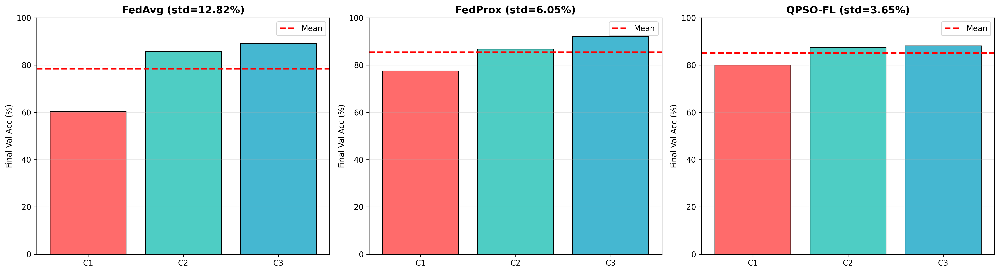
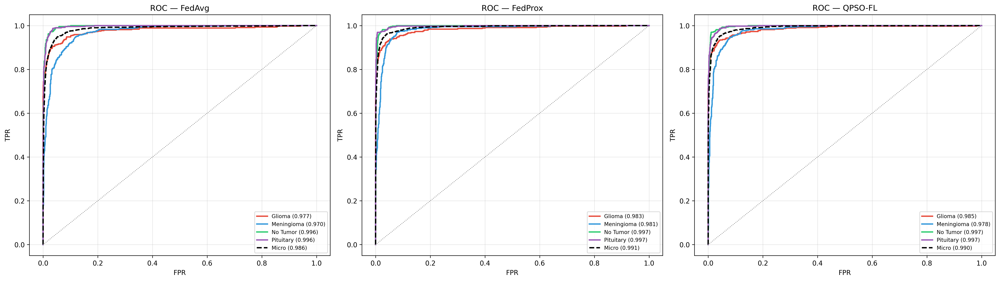

Architecture
System Architecture


An integrated AI pipeline for privacy-preserving classification, volumetric segmentation, and longitudinal growth prediction.
Brain tumours require highly accurate detection, segmentation, and continuous monitoring to support timely clinical decisions. Traditional manual analysis of MRI scans is slow, subjective, and limited by human fatigue.
This project builds an integrated AI pipeline: 3D multimodal tumour segmentation, federated classification, and longitudinal progression forecasting — motivated by precision, explainability, scalability, and privacy.
This project proposes a multimodal AI framework for brain tumour diagnosis and monitoring. The system integrates 3D Attention-U-Net segmentation, federated tumour classification with QPSO aggregation, and longitudinal tumour progression forecasting using mathematical models and LSTM networks.
For Brain Tumor Classification, 3D Glioma Segmentation, and Tumor Progression Analysis
Existing AI performs basic classification OR 2D segmentation — never integrated end-to-end
No system predicts tumour evolution over time using longitudinal data
Centralized training requires sharing sensitive patient data across hospitals
Standard FL algorithms (FedAvg) leave smaller hospitals with poor accuracy
| # | Author | Method | Architecture | Gap |
|---|---|---|---|---|
| 1 | Edla & Indhumathi, 2025 | QPSO on IID MNIST | CNN + FedAvg/QPSO | IID only; no FedProx comparison |
| 2 | Pati et al., 2022 | FL across 71 institutions | U-Net + FedAvg | No fairness analysis; no QPSO |
| 3 | Isensee et al., 2021 | nnU-Net self-configuring | 3D U-Net | No attention mechanism |
| 4 | Subramanian et al., 2021 | ST-ConvLSTM 4D MRI | Spatio-Temporal LSTM | Small dataset; no math models |
| 5 | Zhang et al., 2023 | Self-supervised temporal | ResNet + Temporal | Binary only; no volume forecast |
FedAvg, FedProx, and novel Layer-by-Layer QPSO across 3 simulated hospitals. ResNet-18, 4-class, 100 FL rounds.
QPSO achieves 3.5x better fairness than FedAvg
3D Attention U-Net (5.9M params) on BraTS 2021, 4 MRI modalities, 3 tumor regions (TC, WT, ET).
Mean Dice Score: 0.76 on BraTS 2021
Math models (Logistic, Gompertz) + Attention-LSTM hybrid. 3D U-Net spatial prediction for WHERE growth occurs.
MAE improved 7.88% for HGG patients
Three hospitals train locally, then send weights to the central server where QPSO aggregation finds the optimal global model through quantum-inspired position updates.
Waiting...


| Metric | FedAvg | FedProx | L-b-L QPSO |
|---|---|---|---|
| Best Global Accuracy | 90.56% | 93.02% | 92.09% |
| Client 1 (smallest) | 60.42% | 77.50% | 80.00% |
| Client 2 | 85.73% | 86.80% | 87.33% |
| Client 3 (largest) | 89.17% | 92.14% | 88.10% |
| Client Std Dev | 12.82% | 6.05% | 3.65% |
| Fairness Improvement | Baseline | 2.1x fairer | 3.5x fairer |

Per-Client Fairness

ROC-AUC Curves
Watch the tumor grow over time. Our hybrid Math + LSTM model predicts growth trajectory and raises clinical alerts when growth exceeds RANO thresholds.
Integrated classification + segmentation + progression forecasting
Reduces inter-hospital accuracy gap by 81% vs FedAvg. Only method keeping weakest hospital at 80%+
3D Attention U-Net on BraTS 2021 segmentation benchmark
Global accuracy hides inequity. Per-client fairness metrics are essential in clinical FL (Cohen's d: 0.35 to 1.26)